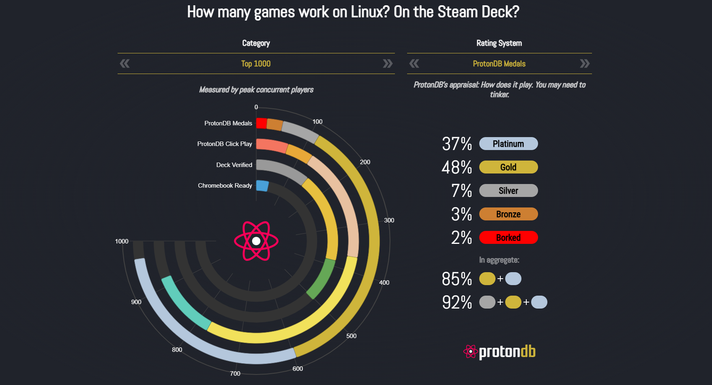

Desde sus inicios los sistemas Linux han tenido diversos problemas para conseguir utilizar programas no hechos para Linux. En el apartado del gaming esto no fue diferente, y hasta hace relativamente poco, la compatibilidad con los videojuegos dependía directamente de los propios desarrolladores haciendo una versión específica para Linux.
En el 21 de agosto de 2018 valve lanzó la primera versión de Protón, una capa de compatibilidad para que juegos de Microsoft Windows se ejecuten en sistemas operativos basados en Linux. Gracias a ello, a día de hoy la compatibilidad de los videojuegos es de 90% aproximadamente.

Para la plataforma de juegos Steam, lanzada también por valve, es posible ver la compatibilidad con los juegos a través de los aportes de la comunidad en ProtonDB (Origen de la imagen superior)
Aunque la compatibilidad ha aumentado con creces en comparación a sus inicios, aun sigue habiendo ciertos juegos que son directamente incompatibles con los sistemas Linux. Esto se debe, a que esos juegos poseen un sistema anti-trampas que opera a nivel de Kernel (Kernel Level Anticheat).
De entre ellos se encuentras los juegos que utilizar Vanguard y Easy Anti-Cheat: